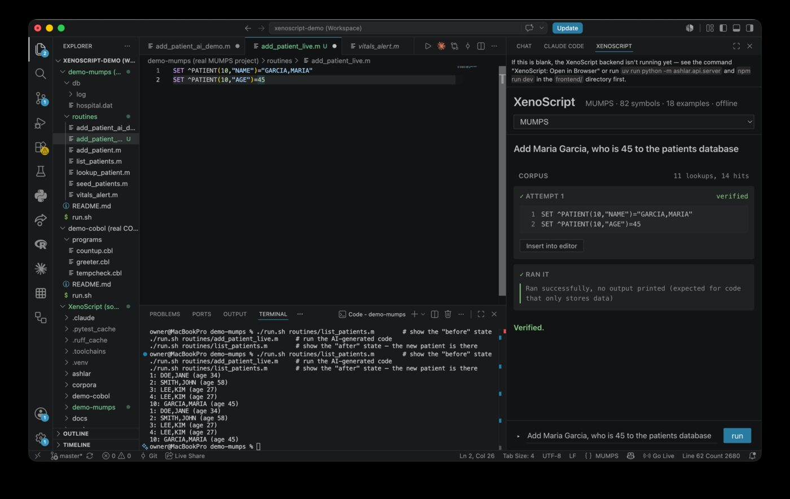

Offline AI · classified & undocumented languages
Validated before you ever see it.
Every classified program has languages that can't leave the room — no public docs, no training data, no cloud AI allowed anywhere near them. XenoScript pairs a local model with a real compiler or interpreter, entirely air‑gapped, for exactly that case. Proven here on MUMPS and COBOL, two real, publicly-undocumented legacy languages, and on Plinth, a language we invented from scratch to prove zero memorization. Nothing reaches you until it's actually verified, never guessed.
Runs fully offline, air‑gapped. No fine-tuning. Adding a language means adding a corpus folder, not writing new code.
The insight
We didn't train a bigger model. We gave it a way to check its own work.
Retrieve real examples. Generate a candidate. Verify it against a real compiler or interpreter. Repair on failure. Cache what's actually proven — not just what ran without crashing. XenoScript wraps whatever local model you already have in that loop, every single time, before it ever shows you a line — which is exactly why it doesn't need the model to already know the language. It needs a real toolchain, which a secure program already has on-site.
Expected pass rate vs. repair attempts illustrative, not measured
iterations (trials) →
Modeled curve, not a live measurement — XenoScript's own harness caps real repair attempts at 4 per task. The real, measured number: on Plinth — a synthetic language invented for this project, provably absent from any model's training data — the full retrieve‑verify‑repair loop (arm D, single run) scored 25% on qwen2.5-coder:3b, against 0% with no help at all (arm A). Full numbers in LOG.md.
Where you actually use it
A real VS Code extension. Not another browser tab.
XenoScript docks in VS Code's own sidebar, right next to Chat and Claude Code. Generate, verify, and repair without leaving your editor — then click Insert into editor to drop the verified result straight into your open file, at your cursor. This is the real, unedited window, captured live.

How it actually works
Pull real symbols and examples
Grep the language's own corpus — docs, real examples, real symbol tables. Nothing here is invented; every citation traces back to a file on disk.
The model drafts a candidate
The local model writes a first attempt, grounded in whatever retrieval actually found for this prompt.
Run it. For real.
The candidate goes through a real compiler or interpreter — Reference Standard M, GnuCOBOL — not a guess about whether it would work.
Feed the real error back
A failure's actual compiler output goes back to the model, up to four attempts, until it verifies.
Never solve it twice
A behaviorally-checked solution is cached and only ever cited as an example once it's proven correct against real ground truth — not just "ran without crashing."
> grep_corpus("ELSE")
4 hits — manual.md:88, pairs/004
Three proof points, not three products
We can't put a classified language on a public repo. So we proved it three other ways.
Adding a language is a folder, not a fork — docs, examples, a toolchain adapter, never new code in the core. Each corpus below demonstrates the same architecture handling a language the model can't have memorized.
MUMPS
Still running much of the VA's, Epic's, and Meditech's electronic health record systems. Decades old, almost no public documentation, no mainstream assistant writes it reliably.
COBOL
Proves the architecture isn't MUMPS-specific. Here the model already has real training exposure — a genuinely different, and equally honest, result.
Plinth
A synthetic language invented for this project — the closest public stand-in for an actual classified DSL. If the loop still works here, it can't be the model quietly remembering the answer.
Built by finding real bugs, not hiding them
Every claim on this page was re-tested live before it was written down.
The trailing newline that ate the output
The real interpreter silently discarded the last piped-in line whenever generated source didn't end in a newline — exit 0, no error, no output. Found by bisecting the exact bytes going over the wire, not by guessing.
The cache that poisoned itself
A structurally-wrong-but-error-free generation could get cached and cited as a "real example" for the next similar prompt — a silent, self-reinforcing corruption loop. Fixed by only citing solutions checked against real ground truth.
ELSE needs two spaces, not one
A genuine interpreter grammar quirk the small model kept getting wrong even when told the exact fix. Now normalized mechanically, and the corrected source flows all the way back to what you actually see.
Try it